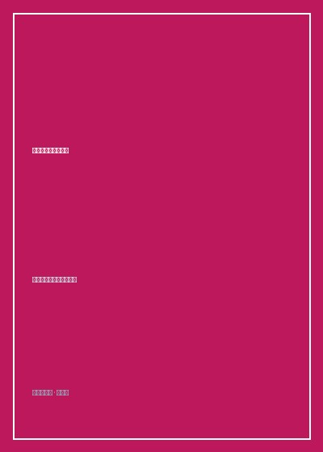

《国家建设与政府行为》

总体观点
《国家建设与政府行为》是中国组织社会学与政治社会学领域无可替代的奠基之作。周雪光教授及其合作者直面当代中国国家治理的核心悖论：高度中央集权的大一统体制与极其庞大、异质性极高的地方基层实际情况之间的巨大治理张力。
全书以无可辩驳的田野个案解构了中国基层官员看似非理性的行为逻辑。自上而下的'一票否决'压力型考核体制，必然会倒逼基层政府部门之间为了规避风险而形成广泛的'共谋行为'（Collusion）。基层干部的'变通、敷衍与应付'，在本质上是官僚科层系统为了在不兼容的多元目标重压下维持运转而自发生长出的系统缓冲阀门。
作者深入剖析了'项目制'与'运动式治理'作为国家治理常规化机制的制度代价。专项资金的条块分割、运动式整顿对法治程序的侵蚀，构成了转型期国家建设不可忽视的内生挑战，为理解当代中国政权运作提供了最深刻的理论解剖刀。
核心观点
-
1. 基层政府的共谋行为：压力型体制下的理性自救
当上级下达的指标任务（如环保、招商、维稳）超越基层现实承载极限时，基层党政一把手与职能部门会自发联手向上汇报虚假达标，以共担政治风险。
面对临时突击环保大检查，镇长与企业主达成默契：检查组到达前三天集中停产刷绿漆，检查组离开后立刻复工恢复生产。 -
2. 运动式治理机制的诱惑与陷阱：常规科层的意外休克
常规科层制效率低下推诿扯皮，最高决策层倾向于通过发起全员动员、特事特办的'运动式治理'迅速突破瓶颈，但频繁运动会严重伤害制度化建设。
专项'严打'或'百日攻坚行动'能在短期内取得瞩目数字战果，但运动一过，常规部门往往陷入更为严重的权力真空与报复性反弹。 -
3. 项目制运作的制度逻辑：国家财政转移支付的集权与悬浮
分税制改革后，中央将巨额专项资金打包为各种'示范项目'下放，引发基层各县各村大搞'包装申报争夺资金'的内卷博弈，导致基层治理项目化与悬浮化。
贫困村为了争夺千万级农业生态旅游项目专项款，不惜借贷巨资在农田里铺设大理石景观喷泉，资金耗尽后工程迅速荒废杂草丛生。 -
4. 正式权力与非正式权威的互嵌：村治精英的不可替代性
现代国家权力试图通过选派第一书记和安装数字化摄像头全面渗透乡村，但真正解决征地纠纷与邻里械斗依然依赖本土宗族长老与能人的私下斡旋。
乡镇政府推进跨村公路修建遇到钉子户阻挠，派出所与法院束手无策，最终靠请出宗祠族长在祠堂摆茶讲和三天搞定拆迁协议。 -
5. 大一统体制的灵活性底牌：松散关联作为系统的安全气囊
如果一个庞大帝国的每一个神经末梢都必须100%严格执行中央指令，系统会因过载而瞬间崩裂，基层广泛存在的'选择性执行'是帝国延存的减震器。
周雪光总结经典悖论：'中国体制之所以具有惊人的韧性，恰恰在于它在严格的一统原则之下，容忍了基层极其广泛的非正式变通与默许空间。'
全书结构
-
第一篇 国家建设与基层政权：科层制演进与政权吸纳
从韦伯理性官僚制与当代组织社会学切入，梳理中国自帝制时代'皇权不下县'到当代全能型基层政权建设的历史跨越。
对比传统士绅自治与当代乡镇七头八所官僚机构在征收农业税费过程中的成本效益巨变，揭示现代国家政权内卷化的组织学机理。 -
第二篇 政府行为与组织机制：自上而下的压力型体制与自下而上的变通
系统解构'压力型体制'的核心机制：目标分解、指标量化、过程监控与终点问责，剖析基层'上有政策下有对策'的生存智慧。
实录某省招商引资'一票否决'考核下，基层公务员全员被分摊拉存款指标，甚至出现自掏腰包借高利贷过桥虚构政绩的极端个案。 -
第三篇 资源调配与项目制运作：财政转移支付与基层利益博弈
深入剖析新世纪以来项目制在水利、扶贫、教育等领域的全面推行，分析条块分割、分赃联盟与项目空转对农村社会资本的侵蚀。
跟踪一个国家级扶贫示范项目从发改委立项、地方配套资金作假、专家评审会红包到最终验收过关的完整权力寻租利益链条。 -
第四篇 乡村社会治理与制度变迁：产权纠纷、土地流转与村治秩序
聚焦工业化征地拆迁大潮中，集体土地产权模糊性引发的基层官民冲突，探讨法治话语与传统情理在维稳现场的激烈交锋。
深入东部某发达村庄，记录村党支部书记如何利用黑白两道手段打压村民上访，同时又在旧村改造中为村民争取最大拆迁补偿的复杂人性。 -
结语：中国国家治理逻辑的组织学观察
全书理论升华，周雪光教授提出国家治理的一统体制与有效治理矛盾论，为中国未来行政体制改革提供极具建设性的战略洞见。
作者在全书最后写道：'理性认识我们身处的体制机制，不是为了悲观叹息，而是为了在制度演进的漫长历史中找寻那条通往善治的坚实路径'。